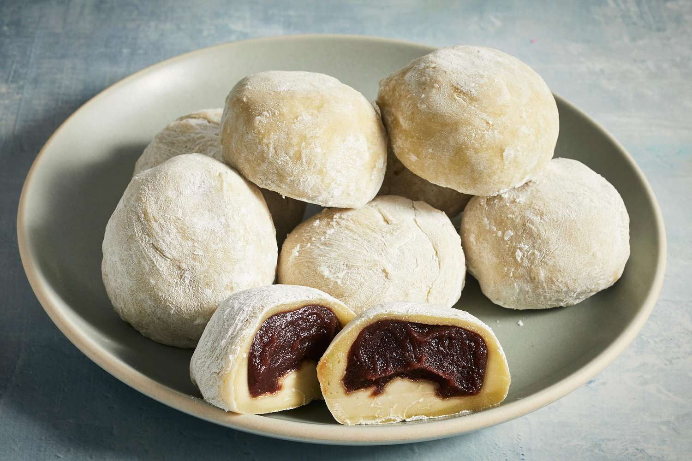

mochi

Ingredients
- Glutinous Rice Flour – Traditionally, if you can find Japanese sweet rice flour known as Shiratamako or Mochiko, this would be best. However, the easiest substitute is regular glutinous rice flour. We’ve found it at our local and Asian supermarkets as well as online. Look out for the see-through bag with the green writing – not the red writing (which is regular rice flour and not sticky!).
- Red bean paste– We use homemade coarse red bean paste (also known as anko) from boiling and mashing azuki beans with sugar, but you can use the fine bean paste as well, it’s completely up to your taste. Store bought is fine – you’ll find it at your local Asian supermarket. In a pinch, you could make a filling with sweetened kidney beans, like in Vietnamese 3 Colour Bean Dessert. Or ditch the beans, and make up your own filling!
Steps
- In a large bowl, mix together the 1 heaped cup of glutinous rice flour, 4 tbsp of sugar and 1/2 cup of water until combined.
- Loosely cover with cling wrap and microwave for 1 minute. With the spoon, give it a quick mix, re-cover and pop back in for another minute.
- Get a spatula, and wet it in water. Pull the mochi away from the sides and fold it in until it’s a rough dough ball shape. It should be sticky and pliable, with the colour turning from bright white to a more translucent cream.
- Spread the cornstarch on a clean dry surface, and pop the mochi onto it using the wet spatula. Cover it with cornstarch until it’s no longer sticky, molding it into a thick and flat disc, and allow to cool for a few minutes.
- Roll 1 tbsp of red bean paste into a ball, and repeat until you have 8 balls ready to wrap with mochi.
- Grab the cooled mochi dough and cut into 8 even pieces using a knife or dough cutter (pop a bit of cornstarch on to avoid sticking).
- Coat your fingertips in the cornstarch and pick up your first piece of mochi. Flatten and shape into a disc around 10cm / 2 inches wide.
- Place a red bean paste ball into the centre and wrap the mochi dough around it. Pull up the edges into the centre and pinch it altogether.
- Place the mochi seam side down and repeat with the remaining dough and bean paste. Serve immediately, and best eaten within the day.